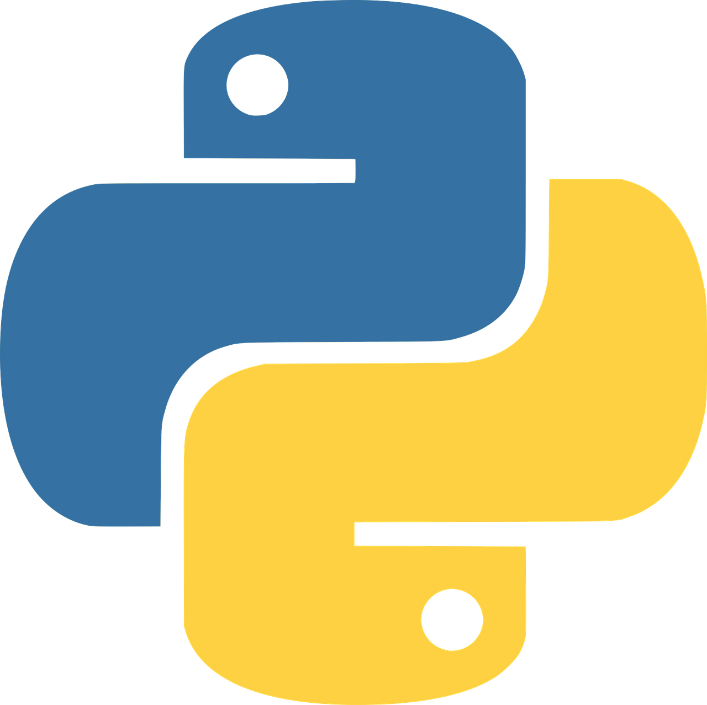
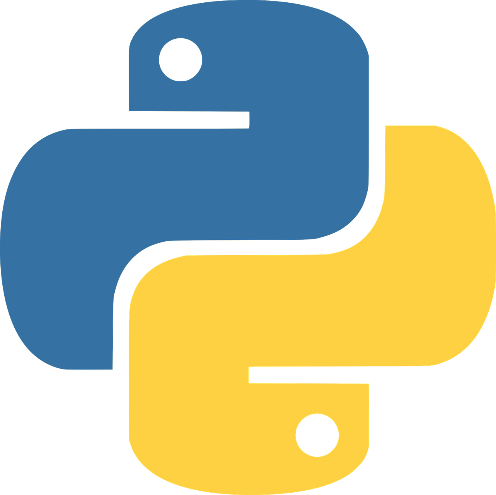
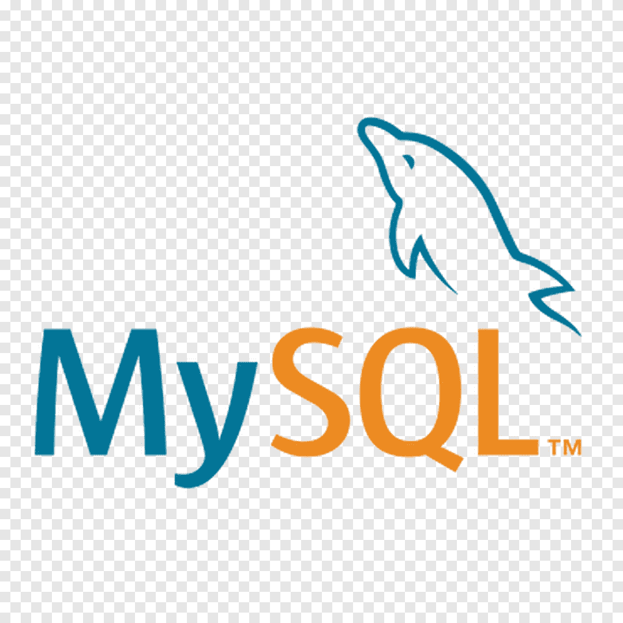
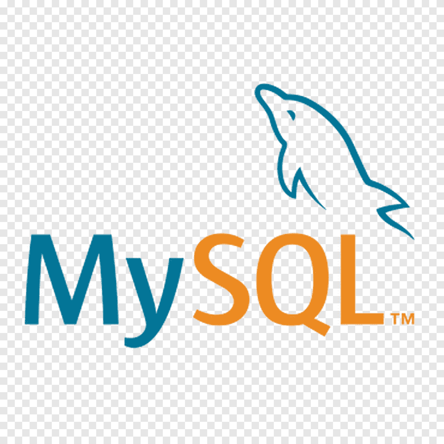
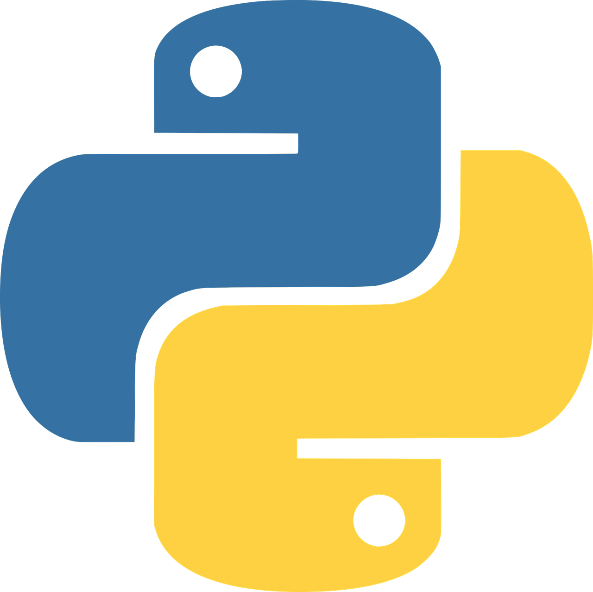
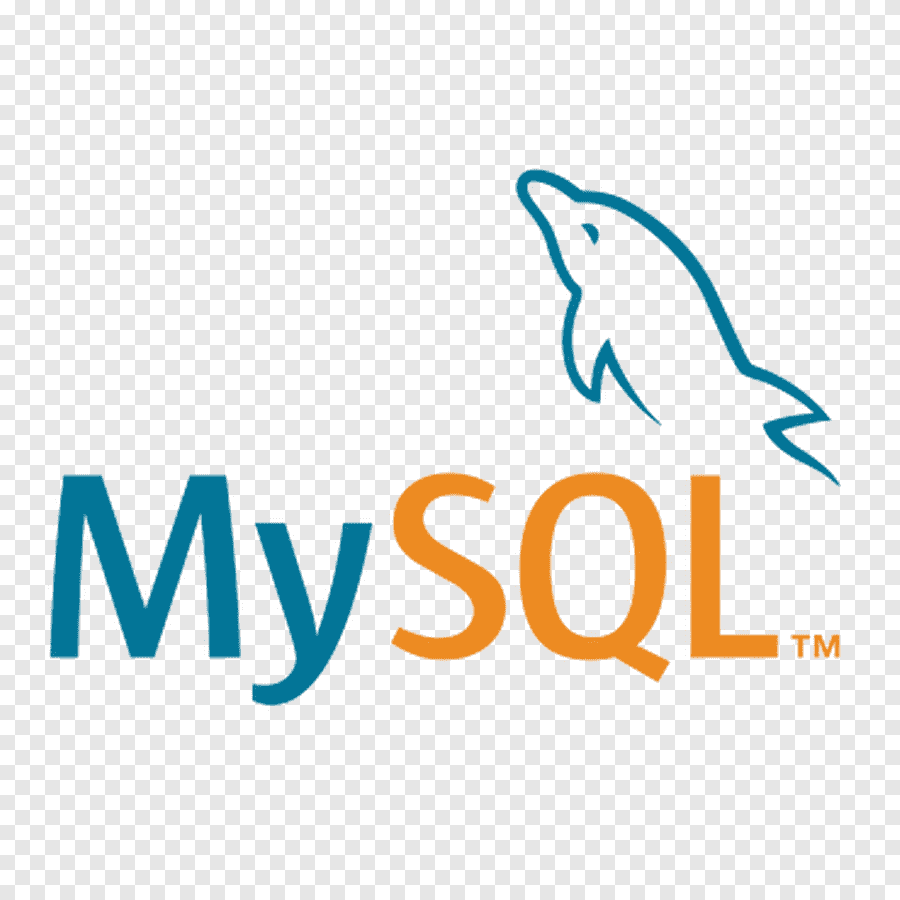

Skills


 



 

FREELANCE WEB DEVELOPER
Hello, My name is Wai Linn Kyaw. I was bron in South Okkalarpa Township, Yangon. I have passed Matriculation Exam on 2013 and joined the college named Victoria University College for Higher National Diploma in Civil Engineering and then, joined Chindwin-PSB-Institute to attend BEng Civil Engineering from University of Portsmouth, UK. I have graduated BEng Civil Engineering in 2018. And I started E-Major(Distance) in Dagon University in 2016 and I graduated BA(English) in 2019. After graduation, I joined the Dhammaduta Monestry as Junior Site Engineer for a year. Then, I decided to go to Japan for Civil Engineering in latest 2019 and started learning Japanese Language N5 and N4 in Tokyo Yangon Japanese Training Center. Unfortunately, in the beginning of the 2020 in Myanmar, Corona Virus has been infected among civillians and Tokyo Yangon shuted down. In the Meantime, I was lost my way and I joined Classic Electric Company as Junior Site Enginner for building Tower Constructions for a year. I spent most of my time in construction fields. Then, I changed my carrer as Interior Designer and joined in Thaw Ta Eain Sound Absorption and Insulation Company. In that time, another crisis happened again in Myanmar, it is coup by military. Job Opportunities are getting lost day by day. I made my decision to go to Japan. Started Learning Japanese Language again. One day, I found a news on facebook which is we can get IT Engineer Visa in Japan even though we are not IT Engineer. I am so interested in IT and started learning in JKT Digital Institute and I will have to go to Japan after my FE Exam and JLPT N2 Exam.
BEng (Civil Engineering) from University of Portsmouth via Chindwin-PSB-Institute
BA (English) from Dagon University
Foundation Diploma in IT from ABE-UK
Language (IELTS 5.5 band, Japanese N4(Still)


 +959421023714
+959421023714